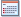

To print the date the photo was taken on the photo, click  (Date Settings) in the Layout/Print screen, then select the Print date checkbox in the Date Settings dialog.
The date is displayed in the short date format (mm/dd/yyyy, etc.) specified in your operating system.
See Help for details on setting dates.